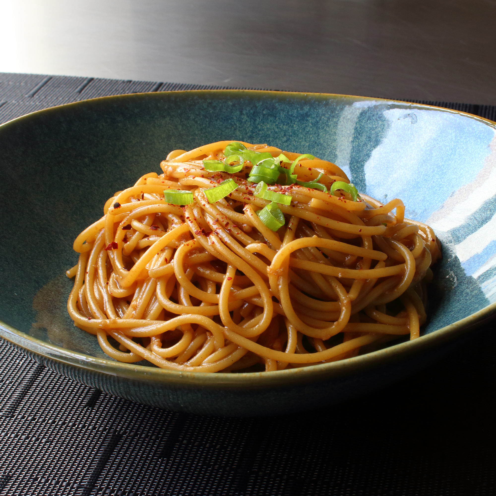

Garlic Noodles

Ingredients
Secret Sauce
- 2 tablespoons soy sauce
- 1 tablespoon oyster sauce
- 2 teaspoons Worcestershire sauce
- 2 teaspoons fish sauce
- 1/4 teaspoon sesame oil
- 1 pinch cayenne pepper
For the noodles
- 8 cloves garlic, minced
- 4 tablespoons unsalted butter
- 1/4 cup finely grated parmigiano-reggiano cheese
- 1 tablespoon chopped green onion, or to taste
- 6 ounces of spaghetti
- 1 pinch red pepper flakes
Steps
- Stir soy sauce, oyster sauce, Worcestershire sauce, fish sauce, sesame oil, and cayenne pepper together in a small bowl for the secret sauce.
- Place secret sauce near the stove. Place garlic, butter, Parmesan cheese, and green onion in individual bowls within easy reach.
- Melt butter in a skillet over medium heat. Add garlic; cook and stir just until fragrant, about 1 minute. Quickly stir in the secret sauce and turn off the heat.
- Bring a large pot of lightly salted water to a boil. Cook spaghetti in the boiling water, stirring occasionally, until tender yet slightly firm to the bite, about 12 minutes.
- Transfer spaghetti into the sauce using tongs, bringing some of the cooking water with it. Toss until well coated and stir in Parmesan cheese. Splash in more pasta water if noodles are too dry.
- Plate noodles. Garnish with red pepper flakes and green onions.